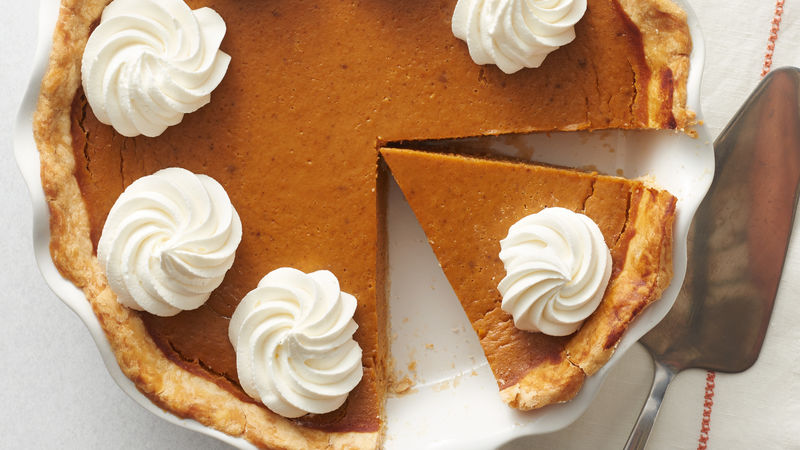

How to make Pumpkin Pie
With a little Spice
Description
This recipe will turn you into a Pumpkin Pie making GENIUS We will be mashing pumpkins, Crafting Crust, Adding some nice spice, Whipping some cream on top and Having a nice bite.
Some like making their pies with crust some without....
Ingredients
Single-Crust Pie
The first thing you should initially do is gather them INGREDIENTS , Your
ingredients should consist of
- 1 1/3 cups all-purpose flour
- 1 tablespoon granulated sugar
- 1/2 teaspoon salt
- 1/2 cup shortening
- 3 1/2 tablespoons cold water
This will provde enough pastry for a Single-Crust Pie
Filling
- 2 cups mashed, cooked pumpkin, or about 1 1/2 pounds skin-on, raw pumpkin
- 1 (12 fluid ounce) can evaporated milk
- 2 eggs, beaten
- 3/4 cup packed brown sugar
- 1/2 teaspoon ground cinnamon
- 1/2 teaspoon ground ginger
- 1/2 teaspoon ground nutmeg
- 1/2 teaspoon salt
The Process
Now we'll be focusing on the process of creating a delicious Pumpkin Pie
1. Prepare Mashed Pumpkin
- Halve pumpkin and scoop out seeds and stringy portions
- Cut the pumpkin into chunks.
- In a saucepan over medium heat, cover the pumpkin chunks with 1 inch of water and bring to a boil. Reduce heat to low, cover, and simmer for 30 minutes or until tender.
- Drain, cool and remove the peel. Return pumpkin to the saucepan and mash with a potato masher or use a food mill.
2. Preheat Oven
Preheat Oven to 400 Degrees F(200 Degrees C)
3. Prepare Pie Crust
- Prepare pie crust by mixing together the flour, sugar, and salt.
- Cut shortening into flour; add cold water 1 tablespoon at a time (you may need only 3 tablespoons, or up to 4 tablespoons).
- Mix dough and repeat until dough is moist enough to hold together.
- Shape the dough into a flat disc, wrap in plastic wrap, and let chill in the refrigerator for at least 30 minutes.
4.Form Pie Crust
- With lightly floured, hands shape dough into a ball. On a lightly floured board, roll dough out to about 1/8 inch thickness.
- With a sharp knife, cut dough 1 1/2 inch larger than the upside-down 8- to 9-inch pie pan. (You can use any dough scraps to make decorative shapes using small leaf-shaped cookie cutters and place them on top of the pie filling.)
- Gently roll the dough around the rolling pin and transfer it right-side up onto the pie pan. Unroll, easing dough into the bottom of the pie pan. Form a crust by folding the overhanging edges under and crimp as desired.
5. Make Pie Filling
- In a large bowl, beat pumpkin with evaporated milk, eggs, brown sugar, cinnamon, ginger, nutmeg, and salt with an electric mixer or immersion blender. Mix well.
- Pour the filling into your prepared crust.
6. Bake Pie
Bake 40 minutes or until when a knife is inserted 1 inch from the edge comes out clean. See below for more tips on how to tell when your pie is done.
